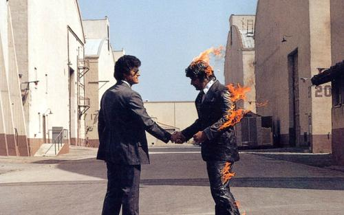

My Project Idea

My thoughts about Video Game
There are many ways of expressing the thoughts of yourself, such that music may express the emotion, drawing may show the vision of the future, movies may reflect the society. Art not only impress people with the beautiful appearance also impress people with the connotation of itself. The art has evolved through thousands of years, from the beginning drawing and singing may be the only arts, but with the evolving of the technologies and cultures more and more forms of arts raised. The arts from “flat” became to “three dimensional” camera and computers provided people more method to express their thoughts of art.
Video games are always being a controversial product of computer, just like each one of the new forms of art was born. At the beginning, people treated video games like drugs and wondering why their children so attracted by it. Video games just every other tempting things it give players fancy and dreaming imagination which may not happen in real lives. Video games just like the movies but it is also different than movies, because it has a thing that a movie can never have——interaction with the audiences. The video games has changed from “drugs” to a new forms of art or can be called as the 9th category of art, from only a few simple figures one the screen to presenting a whole city in reality.
A successful video game should not be judge only by how fancy the video presentation and how cool the engine are, just like the painting should not be judge by how expansive the pigments and the paper it should be judge by the content and the idea it presented. Since I was a kid I began to read different stories and novels, after I gain certain knowledge I always set with my father watch and discuss news from the Television. These experience made me like to think about the things happened near me. In my video game I would like to express my thoughts it can be sarcasm, reflection of the modern society, pass positive emotion or educational to the audiences but whatever I try to do the video game needs to have a story. A story that resonate with audiences and give them chance to think the meaning of it. I think video games are different from each other some of them can be called as art but some of them can only be call as entertainment. Content of ideas and thoughts in video games can be very significant without them just like a person lost his soul.
My Current Ideas for My First Video Game
The video game I want to make is about anti-war and it is inspire by different things for example the song Wish You Were Here from Pink Floyd, Civil War from Guns N’ Roses and One from Metallica, these musician use music to show their hates of War. On another hand I also got inspire by the video games I played before such as Spec Ops: The Line, Battle Field and Wars and the Valiant Heart series. Even though I’m still try to build the story and background of my video game but the whole game will mainly talk about dreams of a dying soldier who lying in the combat hospital. In the game I will provide player choices to reach different ends, the dream of this dying soldier can be a redemption or a corruption. In addition, In the dreams the soldier may brought back to normal lives to demonstrate the physical harm of the PTSD and how humanities has been changed through war. The use of symbolisms and metaphors may be able to let audiences have reflection in reality. I would like to make a video game with my friends next year use tools like Unity engine which is an easy and convenient tool for the rookies. I will try to look for a member who know how to build models of characters and items within the game. If my team can’t find that kind of member we may just buy and use the resources on the internet which made by others. Me and my friends will in-charge of the coding of the video game and I would like to join the design of maps and mechanisms. I think use the first person camera during the game will be the best way of telling the story. The first reason I choose to use first person camera because I play FPS games mostly. The second reason for me to use first person camera because it is a straight forward expression, whatever the characters in the game exist or not in reality it still make the audiences feel the facticity of the game. It will be easy to show the emotion and thoughts of the character through the first person cam. The most important advantage is the sense of substitute for the audience they will be able to feel the empathy easier. Another special feature of this game is high exploratory of the map, let players discover the detail of the map and characters through their travel in the soldier’s dream which match my idea of thinking and reflecting in the video game.
In conclusion, I think to reach this goal I need to work much harder than now, I hope in the future my video game can have some social impacts may change the mind of its audiences and provide my little strength to create a peaceful world.